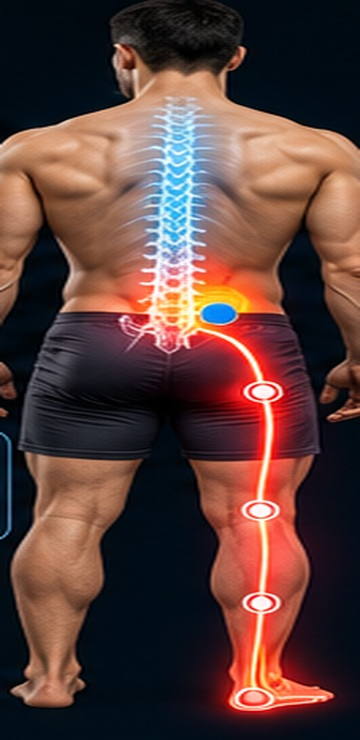

Sequências existentes. Escolha apenas os exercícios orientados para você.
SUAS REFERÊNCIAS
Exercícios
21
Sobre esta referência
Material enviado por você. Fotos mostram posições, sem animar o movimento. As ilustrações e suas afirmações sobre alívio ou descompressão não foram validadas clinicamente. Use a execução e as quantidades orientadas para você.
10repetições
Cada exercício é arquivado assim que você toca em concluir.
SEU DIÁRIO
Histórico
DSTQQSS
Dia com registro
Mapa da Dor
Marque até onde vai sua dor
L5-S1 Nervo ciático (S1)

Ilustração do trajeto aproximado • selecione a região mais distante.
Progresso
Sequência0 diasSessões0Centralizações0
Intensidade da dor
Últimos registros
Distância do sintoma
Lombar → pé/dedos
Sessões e sintomas
Sobre esta referência
Material enviado por você. Fotos mostram posições, sem animar o movimento. As ilustrações e suas afirmações sobre alívio ou descompressão não foram validadas clinicamente. Use a execução e as quantidades orientadas para você.
Quantidades da versão anterior
Referência do catálogo original. Ajuste à sua orientação.